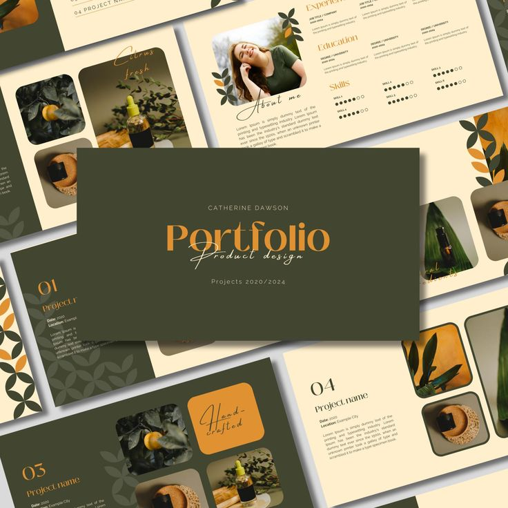

🌐
Disponible pour des opportunités
Mariama DIONE
Étudiante en Licence 2 Géomatique à l'Université Iba Der Thiam de Thiès. Passionnée par la géomatique, l'analyse spatiale et le traitement des données, je suis engagée, motivée et sérieuse avec une grande capacité d'apprentissage.
0
Projets
0
Compétences
0
Langues

MARIAMA DIONE
Géomaticienne · Thiès, Sénégal
SIG
Photogrammétrie
programmation
Télédétection
Cartographie
 onerror="this.parentElement.innerHTML='
onerror="this.parentElement.innerHTML='